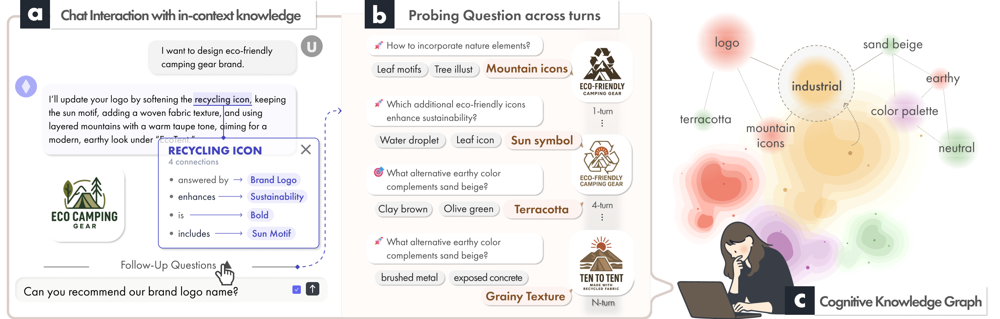
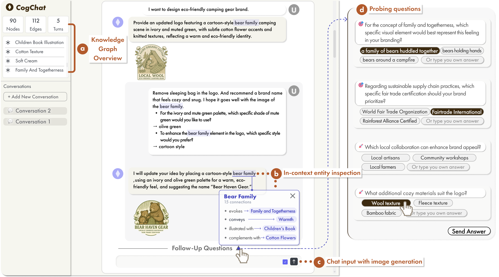
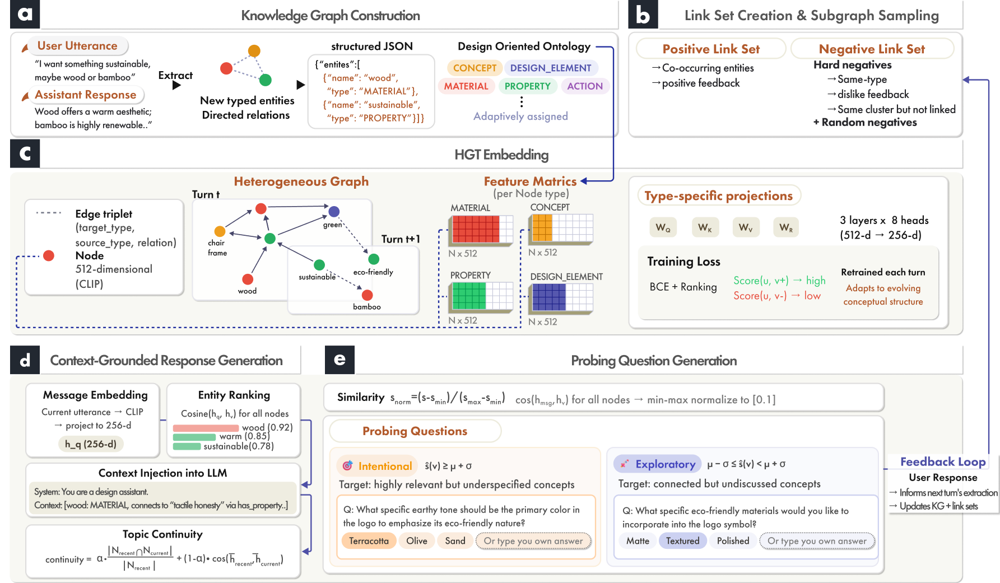
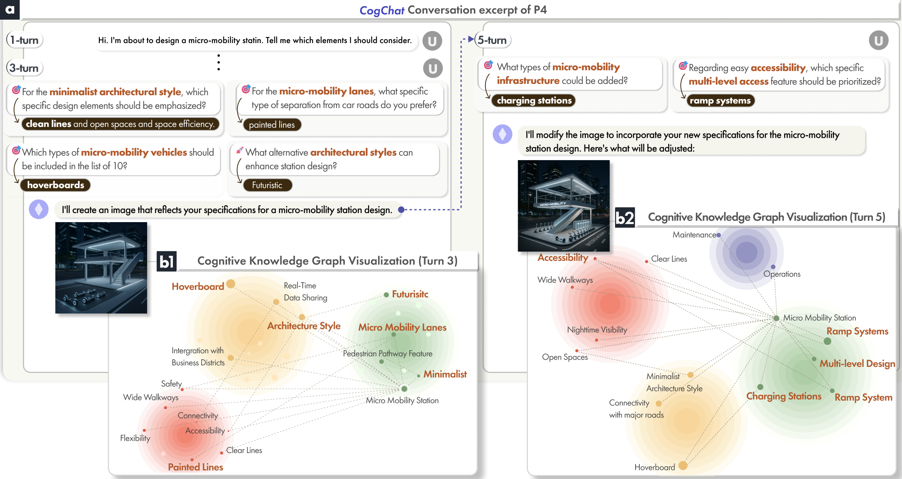
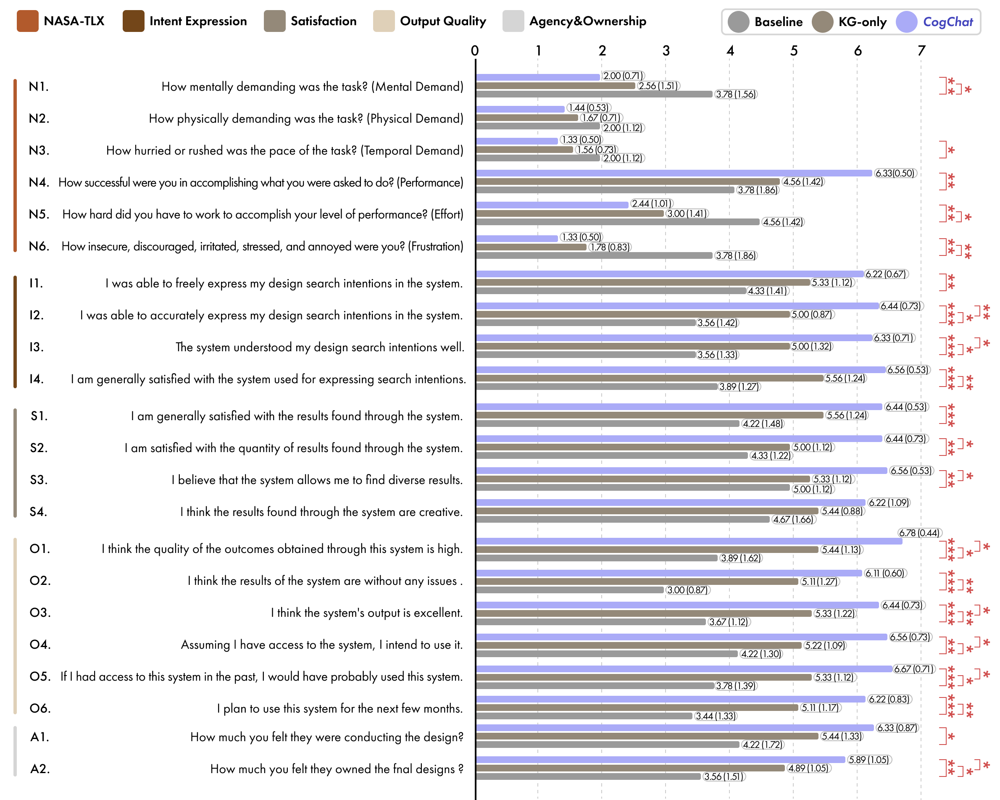
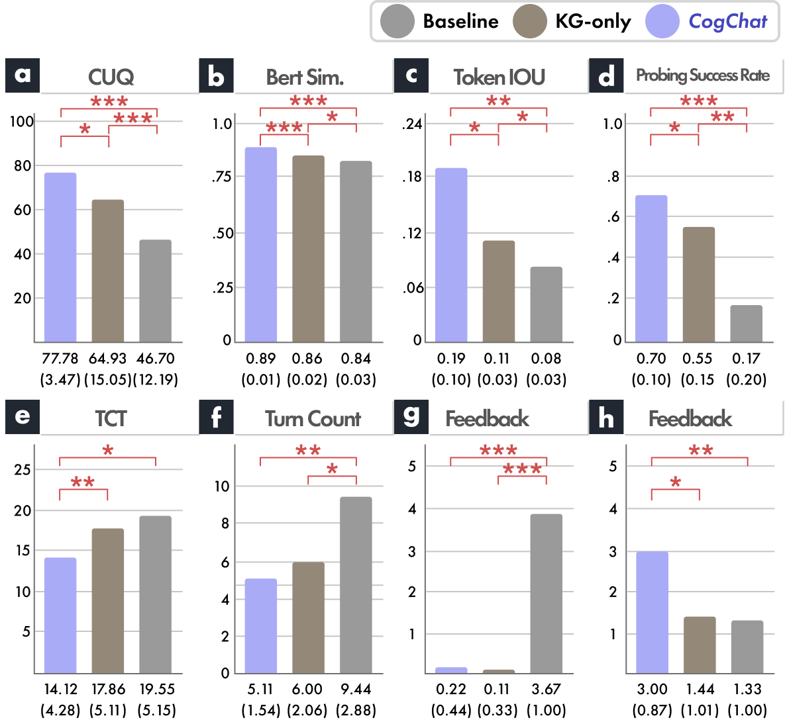
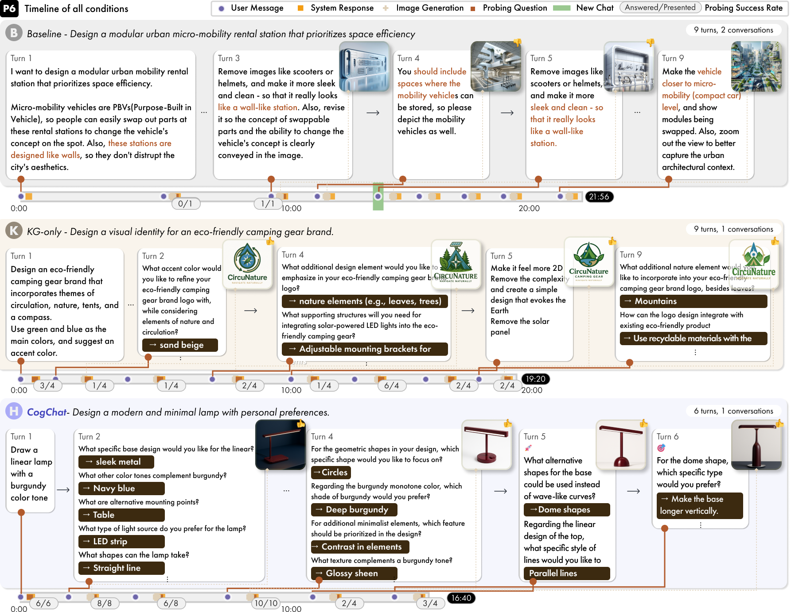

Knowledge Graph-Augmented Conversational AI for Cognitive Grounding in Design
TL;DR
LLM chat systems keep context through recency: the last few turns in a sliding window. In design conversation this breaks down — relational meaning decays between turns (“warm” was tactile grain, not color), identical words mean different things to different designers, and the conversation loops instead of deepening. CogChat builds a personal heterogeneous knowledge graph from each designer’s input and uses a Heterogeneous Graph Transformer (HGT) to select the structurally relevant nodes for every response — and to ask probing questions that surface what the designer hasn’t yet articulated.

The problem
Even with the full history in the context window, the system has memory without structure. Three failures compound.
Relational context decays between turns. The system forgets that “warm” referred to tactile grain, not color temperature — the situated meaning central to design.
Identical words carry different meanings across designers — “heavy” as visual density vs. information overload — but the system processes only generic semantics.
Without retained context or resolved meaning, designers re-explain established ground. The conversation loops and restarts rather than deepening.
These aren’t independent bugs — they’re symptoms of one absence: no persistent, structured representation of the designer’s cognitive space. Design cognition is heterogeneous: perceptual, semantic, and functional elements coexist in a single judgment. Flattening that into a token sequence is what fails.
The interface
Every message builds on the accumulated relational context. Hover an underlined entity below to inspect its place in the knowledge graph.
Hover a dashed entity → its typed connections appear at right.
In-context entity inspection

The pipeline
The graph and the HGT retrain incrementally each turn, so the embedding space tracks the designer’s evolving conceptual structure rather than a frozen snapshot.
Extract typed entities & directed relations from each utterance + response into a design-oriented ontology (concept, material, property, design_element, action).
Build positive links (co-occurring, positively-rated pairs) and hard + random negatives, then sample compact 2-hop subgraphs.
A Heterogeneous Graph Transformer with type-specific projections (3 layers × 8 heads, 512→256-d) retrains each turn on a BCE + ranking loss.
Rank nodes by embedding similarity to the current message; inject only the top relevant subgraph into the LLM, tracking a topic-continuity score.
Partition nodes into intentional (relevant but underspecified) and exploratory (connected but undiscussed) to generate questions. Answers feed back into extraction.

Probing questions
A node’s normalized relevance score ŝ(v) decides which kind it produces. Pick an answer below — it would feed back into the next turn’s extraction.
Highly relevant but underspecified concepts — the system pins down what the designer already cares about.
What specific earthy tone should be the primary color in the logo to emphasize its eco-friendly nature?
Connected but undiscussed concepts — the graph topology surfaces adjacent territory the designer hasn’t mentioned yet.
What specific eco-friendly materials would you like to incorporate into the logo symbol?

Technical evaluation
All conditions share the same base LLM. KG+HGT filters to structurally relevant context; KG-only dumps the whole graph and introduces noise that compounds errors on ambiguous queries.
| Metric | Baseline | KG-only | KG+HGT |
|---|---|---|---|
| ASQA · QA-Hit | 73.3 | 81.7 | 83.3 |
| RewardBench · Chat | 72.5 | 81.2 | 91.3 |
| RewardBench · Chat Hard | 58.3 | 65.7 | 82.4 |
| RewardBench · Safety | 68.2 | 79.8 | 93.6 |
| RewardBench · Reasoning | 52.8 | 71.3 | 87.9 |
| Average | 0.630 | 0.745 | 0.831 |
The largest gains appear where relational structure matters most: Chat Hard (+24.1 over Baseline) and Reasoning (+35.1). Gains scale with task ambiguity.
User study
Designers from graphic, interior/furniture, spatial, exhibition/branding, product, and architecture practice (M = 4.78 yrs experience) compared Baseline, KG-only, and CogChat across three research questions.
CogChat reached a satisfactory outcome in 5.1 turns vs. 9.4 for Baseline (−45.9%), in a single session instead of 2.1. Higher per-turn BERTScore and nearly double the token-level IoU show HGT reuses the designer’s own vocabulary.
Chatbot Usability (CUQ) differed significantly across all three: 77.8 (CogChat) > 64.9 (KG-only) > 46.7 (Baseline). Probing success rate reached 70% vs. 17% for Baseline.
Lower NASA-TLX mental demand, effort, and frustration under KG-grounded conditions. 8 of 9 participants identified CogChat as the deepest conversation, while feeling they retained directional initiative.


CogChat (left bar) leads on every quality metric while costing the designer less.

Semi-structured interviews surfaced why the numbers moved — the relief of not re-explaining, and the surprise of being understood on their own terms.
“The intent was preserved throughout, and subsequent requests were reflected accurately — responses became more precise as the conversation went on.”
It read “water properties” not as transparency but as gentle wave texture — “actually better. I received design advice in reverse, through exploratory questions.”
“I could see my own logic laid out.” Double-clicking a word to inspect its connections made the system’s understanding tangible.
The takeaway isn’t that CogChat remembers more — Baseline already had the full history in its context window. It’s that CogChat organizes what it remembers. The bottleneck in design conversation is not memory capacity but context curation: deciding which relations to foreground at each turn. Eight of nine designers called CogChat the deepest conversation — while still feeling the design was theirs.
BibTeX
@inproceedings{cogchat2026,
title = {CogChat: Knowledge Graph-Augmented Conversational AI with
Heterogeneous Graph Transformer for Cognitive Grounding in
Design Generation},
author = {Choi, Jiin and Hyun, Kyung Hoon},
booktitle = {Proceedings of the ACM Symposium on User Interface
Software and Technology (UIST '26)},
year = {2026},
publisher = {ACM},
}